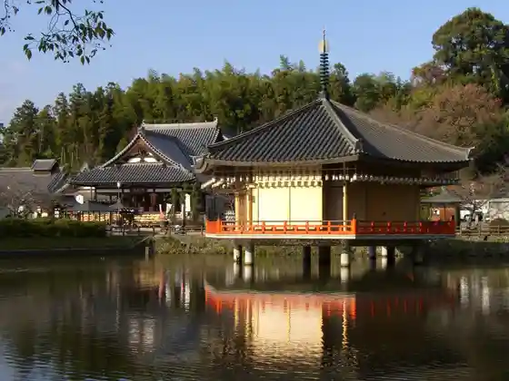
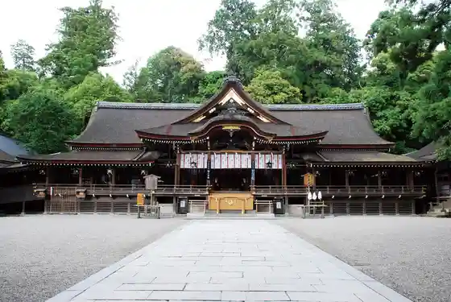
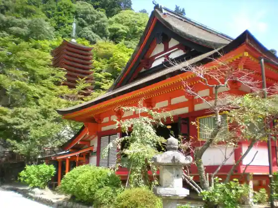
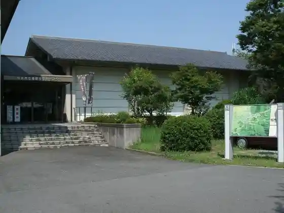

Hase Tera
Sakurai, Nara · 0744-47-7001 · Official / source link
Abe Monju In
Sakurai, Nara · 0744-43-0002 · Official / source link

Daijin Shrine
Sakurai, Nara · 0744-42-6633 · Official / source link

Tanzan Shrine
Sakurai, Nara · 0744-49-0001 · Official / source link

Sakurai Ritsu Maizo Bunkazai Center
Sakurai, Nara · 0744-42-6005 · Official / source link

Shorin Tera
Sakurai, Nara · 0744-43-0005 · Official / source link
Hoki In
Sakurai, Nara · 0744-47-8032 · Official / source link
Hashihaka Burial Mound
Sakurai, Nara · Official / source link
Kasayama Sanpo Ko Shrine
Sakurai, Nara · 0744-48-8312 · Official / source link
Yama no Hen no Michi
Sakurai, Nara · Official / source link
Hibara Shrine
Sakurai, Nara · 0744-42-6633 · Official / source link
Nado Ya Shrine
Sakurai, Nara · 0744-42-3377 · Official / source link
Miwa Yama
Sakurai, Nara · 0744-42-6633 · Official / source link
Kyo I Shrine
Sakurai, Nara · Official / source link
Yo Ki Tenma Shrine
Sakurai, Nara · Official / source link
Sakurai Uda Koiki Rengo
Sakurai, Nara · 0744-47-7077 · Official / source link
Kanaya no Sekibutsu
Sakurai, Nara · Official / source link
Furutsu Land Morioka Toshihiro Mikan Sono
Sakurai, Nara · 090-8754-3602 · Official / source link
Umi Zakuro City Kannon Do
Sakurai, Nara · 0744‐48‐3110 · Official / source link
Miwa Za Ebisu Shrine
Sakurai, Nara · 0744-42-6432 · Official / source link
Koeki Zaidanhojin Kita Art Museum
Sakurai, Nara · 0744-45-2849 · Official / source link
Tsuna Etsu Shrine
Sakurai, Nara · 0744-42-6633 · Official / source link
Moto Sakazuki Mei Shrine (Ko Tsutsumi)
Sakurai, Nara · Official / source link
Yamaguchi Shrine
Sakurai, Nara · Official / source link
Ho Ga no Yama Burial Mound
Sakurai, Nara · Official / source link
Sakurai Tourism Association
Sakurai, Nara · 0744-42-7530 · Official / source link